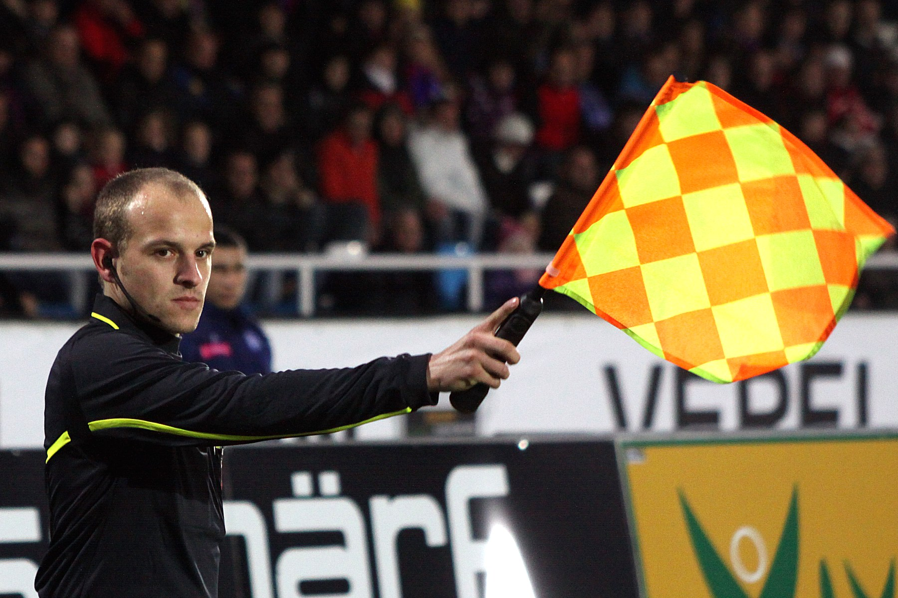

A referee or simply ref is the person of authority in a variety of sports who is responsible for presiding over the game from a neutral point of view and making on-the-fly decisions that enforce the rules of the sport, including sportsmanship decisions such as ejection. The official tasked with this job may be known, in addition to referee, by a variety of other titles as well (often depending on the sport), including umpire, judge, arbiter, arbitrator, linesman, commissaire, timekeeper, touch judge or Technical Official.
The term "referee" originated in association football. Originally the team captains would consult with each other in order to resolve any dispute on the pitch. Eventually this role was delegated to an umpire. Each team would bring their own partisan umpire allowing the team captains to concentrate on the game. Later, the referee, a third "neutral" official was added; this referee would be "referred to" if the umpires could not resolve a dispute.
The referee did not take his place on the pitch until 1891, when the umpires became linesmen (now assistant referees). Today, in many amateur football matches, each side will still supply their own partisan assistant referees (still commonly called club linesmen) to assist the neutral referee appointed by the governing football association if one or both assistant referees are not provided. In this case, the role of the linesmen is limited to indicating out of play and cannot decide off side.
An association football (soccer) match is presided over by a referee, whom the Laws of the Game give "full authority to enforce the Laws of the Game in connection with the match to which he has been appointed" (Law 5). The referee is oftentimes assisted by two assistant referees, and sometimes by a fourth official. In UEFA football 2 additional assistant referees are used, each one standing next to a goal post and directly behind the goal line, to watch for fouls occurring within the penalty area and to see if the ball enters the goal.
The assistant referees' duties generally consist of judging when the ball has left the field of play – including which team is entitled to return the ball to play, judging when an offside offence has occurred, and advising the referee when an infringement of the Laws has occurred out of his or her view. These two officials are typically positioned on opposite touchlines, and each stay beside different halves of the pitch.
A whistle is an instrument which produces sound from a stream of gas, most commonly air. It may be mouth-operated, or powered by air pressure, steam, or other means. Whistles vary in size from a small slide whistle or nose flute type to a large multi-piped church organ. Whistles have been around since early humans first carved out a gourd or branch and found they could make sound with it. In prehistoric Egypt, small shells were used as whistles.[1] Many present day wind instruments are inheritors of these early whistles. With the rise of more mechanical power, other forms of whistles have been developed.
One characteristic of a whistle is that it creates a pure, or nearly pure, tone. The conversion of flow energy to sound comes from an interaction between a solid material and a fluid stream. The forces in some whistles are sufficient to set the solid material in motion. Classic examples are Aeolian tones that result in galloping power lines, or the Tacoma Narrows Bridge (the so-called "Galloping Gertie" of popular media). Other examples are circular disks set into vibration.[2]
Please send us an email!